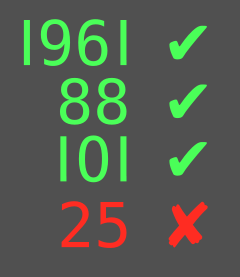

Upside-Down Numbers - Challenge Edition
Points: 3 kyu
Kata ID: 59f98052120be4abfa000304
Welcome to the Challenge Edition of Upside-Down Numbers
In the original kata by @KenKamau you were limited to integers below 2^17. Here, you will be given strings of digits of up to 42 characters in length (upper bound is 10^42 - 1).
Your task is essentially the same, but an additional challenge is creating a fast, efficient solution.
Input:
Your function will receive two strings, each comprised of digits representing a positive integer. These two values will represent the upper and lower bounds of a range.
Output:
Your function must return the number of valid upside down numbers within the range of the two input arguments, including both upper and lower bounds.
What is an Upside-Down Number?
An upside down number is an integer that appears the same when rotated 180 degrees, as illustrated below.

Example:
const x = '0',
y = '25';
upsideDown(x,y); //4
//the valid numbers in the range are 0, 1, 8, and 11
Additional Notes:
- All inputs will be valid.
- The first argument will always be less than the second argument (ie. the range will always be valid).
If you enjoyed this kata, be sure to check out my other katas.